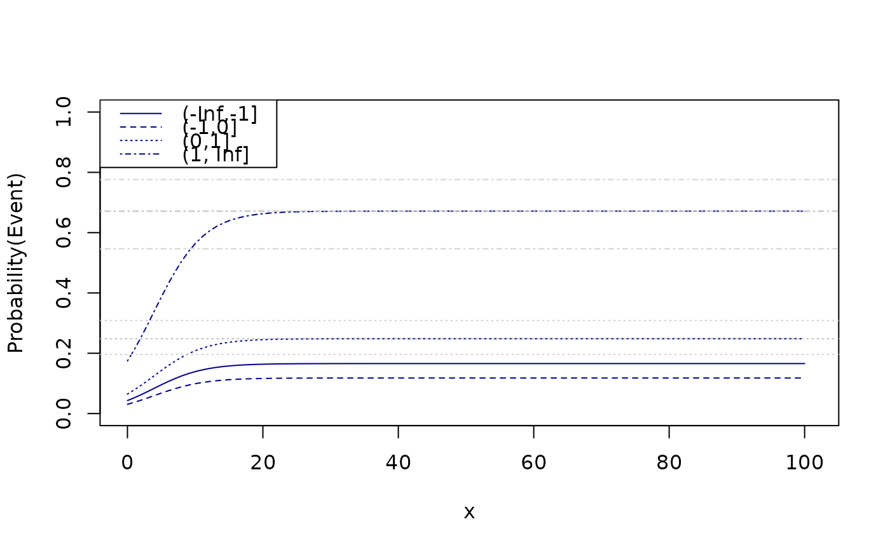

Regression model for binomial data with unkown group of immortals (zero-inflated binomial regression)
zibreg(
formula,
formula.p = ~1,
data,
family = stats::binomial(),
offset = NULL,
start,
var = "hessian",
...
)Formula specifying
Formula for model of disease prevalence
data frame
Distribution family (see the help page family)
Optional offset
Optional starting values
Type of variance (robust, expected, hessian, outer)
Additional arguments to lower level functions
## Simulation
n <- 2e3
x <- runif(n,0,20)
age <- runif(n,10,30)
z0 <- rnorm(n,mean=-1+0.05*age)
z <- cut(z0,breaks=c(-Inf,-1,0,1,Inf))
p0 <- lava:::expit(model.matrix(~z+age) %*% c(-.4, -.4, 0.2, 2, -0.05))
y <- (runif(n)<lava:::tigol(-1+0.25*x-0*age))*1
u <- runif(n)<p0
y[u==0] <- 0
d <- data.frame(y=y,x=x,u=u*1,z=z,age=age)
head(d)
#> y x u z age
#> 1 0 1.464937 0 (0,1] 18.21027
#> 2 0 8.471168 0 (-1,0] 24.61046
#> 3 0 10.616487 0 (-Inf,-1] 27.67200
#> 4 1 18.854095 1 (-1,0] 12.28950
#> 5 0 14.244491 0 (-1,0] 16.48295
#> 6 0 14.489812 0 (-1,0] 17.33514
## Estimation
e0 <- zibreg(y~x*z,~1+z+age,data=d)
e <- zibreg(y~x,~1+z+age,data=d)
compare(e,e0)
#>
#> - Likelihood ratio test -
#>
#> data:
#> chisq = 2.4545, df = 6, p-value = 0.8735
#> sample estimates:
#> log likelihood (model 1) log likelihood (model 2)
#> -845.5394 -844.3122
#>
e
#> Estimate 2.5% 97.5% P-value
#> (Intercept) -0.8096962 -1.34568375 -0.27370865 3.067975e-03
#> x 0.2247970 0.06065481 0.38893919 7.269888e-03
#> pr:(Intercept) -0.1388121 -0.78249152 0.50486730 6.725329e-01
#> pr:z(-1,0] -0.3544657 -0.78800432 0.07907295 1.090480e-01
#> pr:z(0,1] 0.4362824 0.02118711 0.85137778 3.939820e-02
#> pr:z(1, Inf] 2.3908142 1.81380254 2.96782578 4.623694e-16
#> pr:age -0.0752326 -0.10102715 -0.04943804 1.087750e-08
#>
#> Prevalence probabilities:
#> Estimate 2.5% 97.5%
#> {(Intercept)} 0.4653526 0.3137832 0.6236025
#> {(Intercept)} + {z(-1,0]} 0.3791217 0.2487184 0.5296910
#> {(Intercept)} + {z(0,1]} 0.5738240 0.4098366 0.7230380
#> {(Intercept)} + {z(1, Inf]} 0.9048231 0.7876751 0.9605714
#> {(Intercept)} + {age} 0.4466922 0.3018984 0.6011322
PD(e0,intercept=c(1,3),slope=c(2,6))
#> Estimate Std.Err 2.5% 97.5%
#> 50% 4.655517 6.753757 -8.581603 17.89264
#> attr(,"b")
#> [1] -0.7921916 0.1701619
B <- rbind(c(1,0,0,0,20),
c(1,1,0,0,20),
c(1,0,1,0,20),
c(1,0,0,1,20))
prev <- summary(e,pr.contrast=B)$prevalence
x <- seq(0,100,length.out=100)
newdata <- expand.grid(x=x,age=20,z=levels(d$z))
fit <- predict(e,newdata=newdata)
plot(0,0,type="n",xlim=c(0,101),ylim=c(0,1),xlab="x",ylab="Probability(Event)")
count <- 0
for (i in levels(newdata$z)) {
count <- count+1
lines(x,fit[which(newdata$z==i)],col="darkblue",lty=count)
}
abline(h=prev[3:4,1],lty=3:4,col="gray")
abline(h=prev[3:4,2],lty=3:4,col="lightgray")
abline(h=prev[3:4,3],lty=3:4,col="lightgray")
legend("topleft",levels(d$z),col="darkblue",lty=seq_len(length(levels(d$z))))
